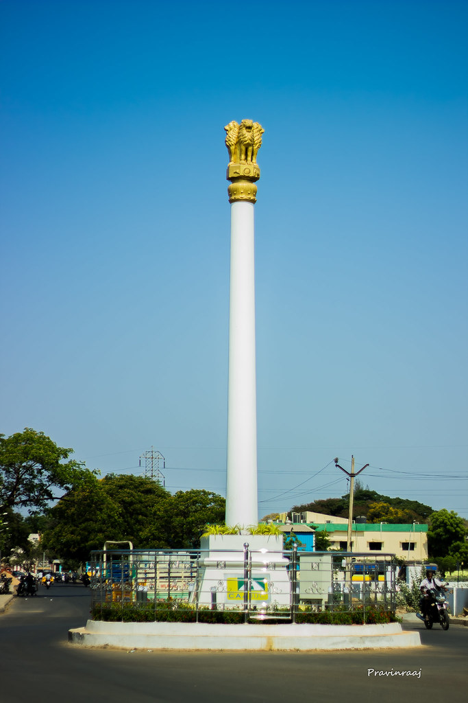

The Ashok Pillar in Chennai is a concrete replica of the Sarnath Lion Capital erected in 1964 to serve as the central landmark for the newly planned residential neighborhood of Ashok Nagar.Origins and HistoryBefore the Colony: The land that is now Ashok Nagar was once a vast guava grove and open land near Kodambakkam Pudur, past the historic stables of the Nawab of Arcot.Building the Pillar: In 1964, the Tamil Nadu Housing Board cleared part of the grove to develop a planned suburban layout. They built a tall concrete pillar topped with the Sarnath lion head emblem as a symbol of national pride, dharma, and unity.Naming the Area: Four main roads were laid out radiating from the pillar. Because the monument stood at the heart of the layout, the surrounding township was officially named Ashok Nagar.
